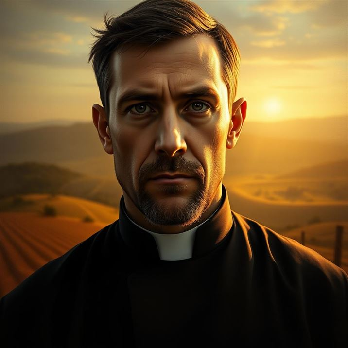
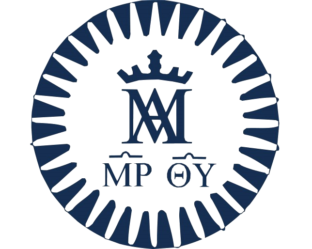
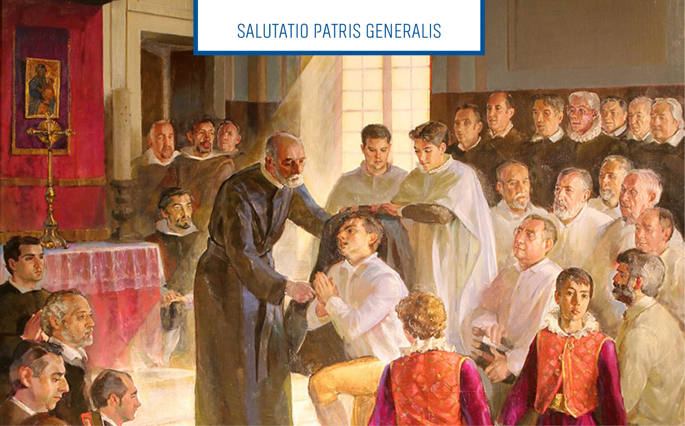

1902
Nace el 23 de diciembre en Vallibona, Castellón, España.
Rostros de la Santidad Escolapia

Matías Cardona Meseguer nació en 1902 en Vallibona, España. Desde joven estuvo vinculado a la Iglesia y encontró su vocación en las Escuelas Pías.
Su camino religioso lo llevó a formarse como sacerdote y a trabajar en el colegio de San Antón, en Barcelona. Su historia quedó marcada por la persecución religiosa de 1936.
Hoy lo recordamos por su fe, su vocación y su pertenencia a las Escuelas Pías.
Matías Cardona sintió desde joven la vocación de ser sacerdote y educador. Por eso ingresó en las Escuelas Pías, una orden religiosa dedicada especialmente a la educación cristiana de niños y jóvenes.
Después de completar su formación religiosa, fue ordenado sacerdote en Calahorra el 11 de abril de 1936. Luego fue destinado al colegio de San Antón, en Barcelona, donde trabajó durante los últimos meses de su vida.
Como miembro de las Escuelas Pías, su misión estaba relacionada con la educación y la formación de los jóvenes. Aunque su trabajo como sacerdote fue breve, formó parte de la comunidad escolapia dedicada a esta tarea.
Su historia nos permite conocer la importancia que tenían la vocación religiosa y la educación dentro de las Escuelas Pías.
Matías Cardona es recordado por su fidelidad a la fe y a su vocación religiosa. Durante la persecución de 1936 tuvo que abandonar el colegio donde trabajaba y refugiarse en distintos lugares.
Finalmente regresó a su pueblo, Vallibona, donde fue detenido. Según los relatos sobre sus últimos momentos, expresó palabras de perdón hacia quienes lo perseguían.
Su testimonio sigue siendo recordado por la Iglesia y las Escuelas Pías como un ejemplo de fidelidad a sus convicciones religiosas.
Matías Cardona murió el 20 de agosto de 1936 en Vallibona, durante la persecución religiosa de la Guerra Civil Española. Por su muerte a causa de su fe, es reconocido como mártir.
El 1 de octubre de 1995, el papa Juan Pablo II lo beatificó junto con otros escolapios que habían sido martirizados durante la persecución religiosa de 1936.
Su historia forma parte de la memoria de las Escuelas Pías y de la Iglesia Católica. Se lo recuerda por su vocación sacerdotal, su relación con la educación y su fidelidad a la fe.
Su legado nos invita a valorar la educación, el servicio a los demás y el respeto por las propias convicciones.
Nace el 23 de diciembre en Vallibona, Castellón, España.
Ingresa en las Escuelas Pías de Morella, a los 12 años.
Viste la sotana escolapia el 25 de julio, según la biografía de WikiPía.
El 11 de abril es ordenado sacerdote en Calahorra.
Es destinado al colegio de San Antón, en Barcelona.
Muere el 20 de agosto en Vallibona durante la persecución religiosa.
Es beatificado por el papa Juan Pablo II el 1 de octubre.


.JPG)


Poné a prueba tus conocimientos sobre el Beato Matías Cardona.